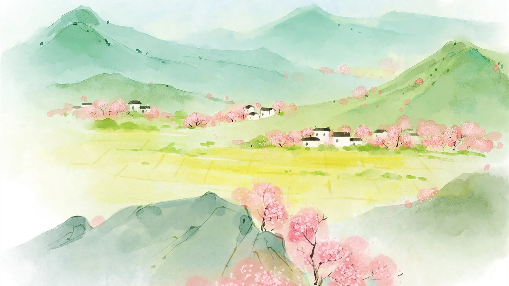

关于我
常用ID 「秋风木叶」，取自《楚辞·九歌·湘夫人》：
袅袅兮秋风，洞庭波兮木叶下。
🤓也用Yang这个昵称。
📚业余中国古代史、🌏爱好地理，
💻CS专业、📺梦想做动画、🎮人生游戏玩家，
📆时代观察员、📝生活记录者；
作品集
在从幼稚走向成熟的二十多年，占据主要篇幅的是校园，我把这段人生的记录叫做《我有一个朋友》。以当下的眼光和见识，记录我的「学生时代」及其延伸的那些人、那些事。
Configurations of the Setup I use & recommend.
心血来潮，一气呵成，新人Pr渣制作。
时间线
1996
出生于中国·湖北。
20世纪末～2008（童年时代）
留守儿童，小镇长大。
童年动画群星璀璨、数不胜数，成为动画爱好者；
《红色警戒2》，打开了我通往计算机的大门，不仅仅局限在电脑游戏，还喜欢上网冲浪、在互联网的世界遨游和探索。
童年动画群星璀璨、数不胜数，成为动画爱好者；
《红色警戒2》，打开了我通往计算机的大门，不仅仅局限在电脑游戏，还喜欢上网冲浪、在互联网的世界遨游和探索。
2008～2011（少年时代，初中）
2011～2014（少年时代，高中）
深入接触《史记》、《孟子》，喜欢古诗文。
「所以隐忍苟活，幽于粪土之中而不辞者，恨私心有所不尽，鄙陋没世，而文采不表于后世也。」
惟愿留下一部传世之作，让它在未来的某一天被后人欣赏，然后再梦游来天上与孤独的我谈心吧，也不枉此生了。
「所以隐忍苟活，幽于粪土之中而不辞者，恨私心有所不尽，鄙陋没世，而文采不表于后世也。」
惟愿留下一部传世之作，让它在未来的某一天被后人欣赏，然后再梦游来天上与孤独的我谈心吧，也不枉此生了。
2014.1.1
「只是在我心中还有一方净土，即使在别人眼里寸草不生，却始终一尘不染。」
2014.3.21
又见春分，桃花文艺，三周年。
2014.4.1
小学是一个班的小学，初中是一群人的初中，高中是几个人的高中…………
我想，大学应该是一个人的大学。
谁走进我的生命，由命运决定，谁停留在我的生命中，由我自己决定。
我想，大学应该是一个人的大学。
谁走进我的生命，由命运决定，谁停留在我的生命中，由我自己决定。
2014.6.30
《未闻花名》，少年的句号。
2014～2026（青年时代）
总有一天，你回过头来看看，你就会发现，你的每个经历、每次错误、每次失败，都帮助你走向了
——你应该成为的那个人。
——你应该成为的那个人。
2014.7.10
第一台笔记本电脑（联想 IdeaPad Y485P），取名“Anna”。
2015.2.5
「这条说说来自Anna上的Linux Ubuntu的Firefox……」
初次接触Linux，折腾Ubuntu，浏览器全面转向Firefox，遇到韦诺之战 (The Battle for Wesnoth)。
初次接触Linux，折腾Ubuntu，浏览器全面转向Firefox，遇到韦诺之战 (The Battle for Wesnoth)。
2015.2.11
拿到C1驾照。
2015.3.5
第一部Apple设备，iPhone 6，取名“Nana”。
开启Apple之门。启用iCloud照片，以图片记录生活，时间线清晰。
开启Apple之门。启用iCloud照片，以图片记录生活，时间线清晰。
2015.5.11
上传到B站的第一个视频，【未闻花名】secret base~你给我的所有~(混合版)。
2015.7.6
启用新头像。
2015.8.16
第一台Mac，MacBook Pro (Retina, 13-inch, Early 2015)，仍叫“Anna”，自此Anna成了我的电脑专属称呼。
拿到Mac以后，沉迷OS X，废寝忘食几个月折腾电脑。
拿到Mac以后，沉迷OS X，废寝忘食几个月折腾电脑。
2015.11.21
购买域名，写了第一个网页
ianna.xyz
2015.11.25
萌生写博客的想法，立即动手用WordPress搭建第一个博客
博客取名「iAnna」，源自我的电脑名字Anna，套用“苹果式”命名法。
blog.ianna.xyz博客取名「iAnna」，源自我的电脑名字Anna，套用“苹果式”命名法。
2015.11.29
日夜不停折腾了几天WordPress，觉得应该专注内容，又了解到Hexo，于是把博客迁移到Hexo。
2015.12.20
思考正式域名，结合网络常用ID购买了
ykqmain.comblog.ykqmain.comi@ykqmain.com
2016.3.20
春分，桃花文艺五周年。
2016.3.31
第一台iPad，iPad Air 2。
2016.11.26
婧玉。
2017.6.10
iPhone 6s Plus。
2018.6.30
大学毕业。
2019.2.16
北漂。
2019.3.18
第一份正式工作。
第一天上班，印象最深刻的不是工作的内容，而是每天单程90分钟的通勤，1小时地铁、30分钟步行。
第一天上班，印象最深刻的不是工作的内容，而是每天单程90分钟的通勤，1小时地铁、30分钟步行。
2019.5.26
一个人躺着，看着窗外下午的阳光。
开始点外卖的生活，因为每天食物实在是太单一了。
开始点外卖的生活，因为每天食物实在是太单一了。
2019.7.17
多次深思熟虑，在租房的导火索下，提出辞职。
2019.10.10
在北京上班的最后一天。
2019.10.14
「江畔何人初见月？江月何年初照人？人生代代无穷已，江月年年望相似。」
2020.1.23
COVID-19。
2020.11.7
iPhone 12。
2020.12.12
联想 小新 Pro 14 2021。
2020.12.16
第一台游戏机，Switch Lite。
2021.1.8
新工作。
2021.1.10
第一辆车，大众朗逸。
2021.3.20
春分，桃花文艺十周年。
2021.3.24
MacBook Pro M1。
2021.11.18
购买《宝可梦 晶灿钻石》，一周沉浸式通关，然后闲鱼出掉了Switch Lite。
2021.12.4
第一台独立显示器，Dell U2720QM，折腾键鼠、手柄外设。
2022.1.17
启用新背景图。
2022.6.9
iPhone 13。
2022.12.20
领证。
2023.1.7
婚礼。
2023.1.11
Studio Display。
2023.5.23
博客基本不再更新。
2023.6.7
第一款Apple手表，Apple Watch Ultra，取名XiaoNa。
2023.10.22
购买iPhone 15 Pro。
2023.12.12
开始使用Apple手记。
2024.1.2
“若非命运的加持，少年的梦想，实在是不值一提……穷极一生追求的幸福自由，原来一开始就有。”
——《我有一个朋友》系列完。
——《我有一个朋友》系列完。
2024.1.3
博客归档。
2024.8.29
为了玩《黑神话：悟空》组装Windows台式：
AMD R5 7500F / NVIDIA GeForce RTX 4060Ti / MSI PRO B650M-B / G-PARTNERS
Dell U2720QM / EDIFIER
Logi MX Keys Mini / Logi MX Anywhere 3S
通关后给妻子日常办公、看剧，作为家庭电脑使用。
AMD R5 7500F / NVIDIA GeForce RTX 4060Ti / MSI PRO B650M-B / G-PARTNERS
Dell U2720QM / EDIFIER
Logi MX Keys Mini / Logi MX Anywhere 3S
通关后给妻子日常办公、看剧，作为家庭电脑使用。
2024.9.13
第一台大电视，75寸雷鸟鹏7，75S585C。
2024.11.9
第六台个人电脑，Mac mini M4。
2025.7.11
拥有iPad Pro M4，喜欢Apple Pencil Pro，取名Pena。
2025.7.29
宝宝出生。
2025.9.20
iPhone 17。
2025.9.25
虽然com确实成为事实标准，但从含义上来讲，对于个人网站和邮箱应该是net更契合，很贴切“个人在网络上的身份”这种象征意义。
折腾博客近十年，确实没有了多余精力，犹豫再三，借此机会关闭博客，毅然注销了原com域名。
启用新域名ykqmain.net，用作个人主页
以后的生活由Apple手记记录、备忘录整理、GitHub存档，由外向趋于保守。
折腾博客近十年，确实没有了多余精力，犹豫再三，借此机会关闭博客，毅然注销了原com域名。
启用新域名ykqmain.net，用作个人主页
https://ykqmain.net和域名邮箱i@ykqmain.net。以后的生活由Apple手记记录、备忘录整理、GitHub存档，由外向趋于保守。
@Now
To be continued...
Update: 2025.09
Update: 2025.09
